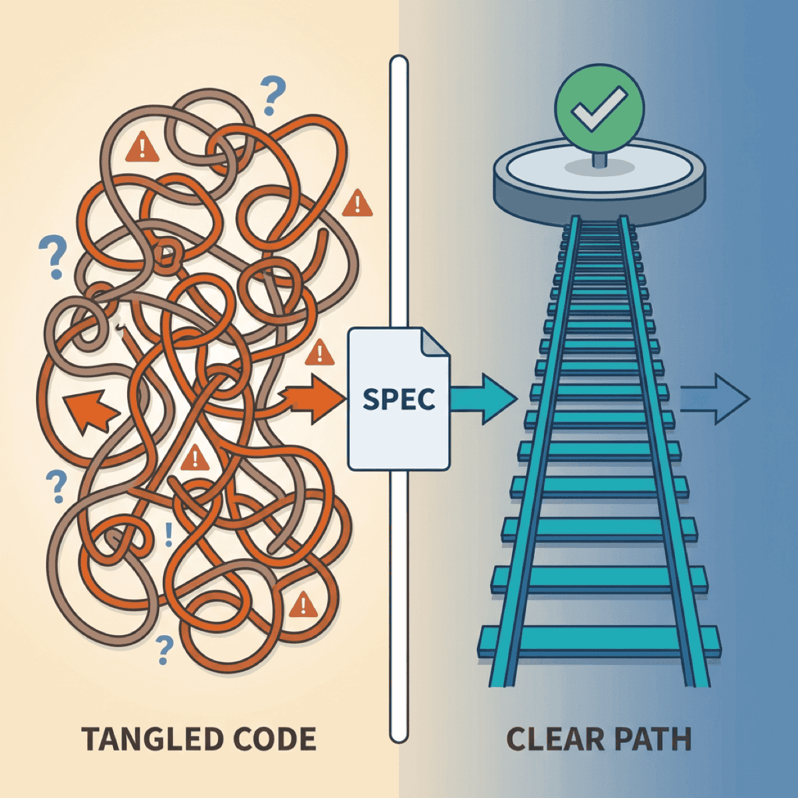

The 15-Minute Spec That Saves 15 Hours

TL;DR
- The METR study paradox: Developers expected AI to make them 24% faster—it actually made them 19% slower, yet they still felt 20% faster
- The difference between “vibe coding” and AI-assisted engineering is a 15-minute spec
- A spec answers five questions: Goal, Inputs, Outputs, Constraints, Done
- Template included—copy it, use it once, notice the difference
Here’s a number that should stop every engineering leader cold: Developers in a recent controlled study expected AI to make them 24% faster. It actually made them 19% slower.
Yet they still felt 20% faster.
That gap—between perception and reality—is where millions of dollars in engineering productivity disappear. The problem isn’t the AI. It’s how we’re using it.
Why “just start prompting” fails
The appeal is obvious. Fire up Cursor or Copilot, describe what you want in plain English, and watch code materialize. It feels like magic. It feels productive.
But feelings lie.
The METR study wasn’t measuring junior developers fumbling with new tools. These were experienced open-source contributors working on familiar codebases, using the best AI coding tools available. They had every advantage—and still got slower.
Why? Because unstructured AI use creates the illusion of speed while generating debt.
GitClear’s analysis of 211 million lines of code found code duplication increased dramatically—copy/pasted code rose from 8.3% to 12.3% of all changes between 2021 and 2024. Code churn (lines revised within two weeks of being written) jumped from 5.5% to 7.9%.
Translation: developers are writing more code that immediately needs fixing.
The difference between vibe coding and AI-assisted engineering is a 15-minute spec.
— Clarke Bishop
What vibe coding actually costs
The real cost isn’t in the first generation. It’s in the debugging spiral.
An indie developer recently shared his SaaS disaster story. He built the entire product through “vibe coding” with Cursor, celebrating “zero hand-written code.” Within weeks: random behaviors, maxed API keys, subscription bypasses. Being non-technical, he couldn’t debug the security breaches. The application was shut down permanently.
This isn’t an isolated case. The pattern repeats across organizations of every size.
The trap works like this:
- You prompt, AI generates something close to what you wanted
- You iterate with follow-up prompts to fix issues
- Each fix introduces new problems because AI lacks context
- You iterate again, building on a shaky foundation
- Eventually it “works”—but you don’t understand why
That last point is critical. When you regenerate until something works, you never build understanding. And when it breaks in production—which it will—you’re debugging code you didn’t write and don’t comprehend.
As one engineer put it: “Debugging AI-created code at scale is practically impossible.”
The spec that changes everything
Here’s the good news: a 15-minute investment in clarity transforms AI results.
The approach comes from Google engineer Addy Osmani, who calls it “waterfall in 15 minutes”—rapid structured planning, not the months-long methodology we escaped decades ago.
The spec answers five questions:
1. Goal: What are we building and why?
One sentence. Forces you to articulate the actual problem, not jump to implementation.
2. Inputs: What data or context does the system receive?
Format, edge cases, where it comes from. AI can’t guess this.
3. Outputs: What should the result look like?
Expected format, structure, an example if possible. Eliminates the “almost right but not quite” problem.
4. Constraints: What must it NOT do?
Security requirements, performance limits, integration boundaries. This is where vibe coding fails hardest—AI doesn’t know what it doesn’t know.
5. Done: How do we know it’s complete?
Acceptance criteria. Testable conditions. The definition of success.
This isn’t bureaucracy. It’s the exact context AI needs to generate useful code instead of plausible-looking garbage.
The template
Here’s exactly what to write:
## Spec: [Feature/Task Name]
### Goal
[One sentence: What are we building and why does it matter?]
### Inputs
- [What data or context does this receive?]
- [What format?]
- [What edge cases exist?]
### Outputs
- [What should the result look like?]
- [Format/structure requirements]
- [Example of expected output]
### Constraints
- [ ] Must NOT [thing to avoid]
- [ ] Must work with [existing system/constraint]
- [ ] Performance requirement: [if applicable]
- [ ] Security requirement: [if applicable]
### Definition of Done
- [ ] [Acceptance criterion 1]
- [ ] [Acceptance criterion 2]
- [ ] [How will we test this?]
### Context Files
- [List relevant code files AI should see]
- [Documentation to include]Copy this. Use it once. Notice the difference.
The spec becomes the prompt
Here’s why this works: your spec isn’t extra work. It’s the prompt context AI actually needs.
Anthropic’s guidance on effective context engineering emphasizes providing the “smallest set of high-signal tokens.” A good spec does exactly that—it eliminates AI guessing by providing focused, relevant context.
Each section maps directly to what AI needs:
- Goal → AI understands the “why” and can make better trade-offs
- Inputs → AI knows what to expect and handle
- Outputs → AI has a clear target to hit
- Constraints → AI knows what to avoid
- Done → AI can verify its own work
The difference between the METR study’s disappointing results and teams that actually accelerate with AI? Structure. The developers who got slower were experienced—but they were prompting without specs. Give AI the context it needs, and the results change dramatically.
The time you “save” skipping specs comes back multiplied in debugging and rework.
— Clarke Bishop
When to skip the spec
Be pragmatic. Not everything needs documentation.
Skip when:
- Truly trivial (rename a variable, fix a typo)
- Exploratory code you’ll delete
- You’ve built this exact thing before and it’s muscle memory
Never skip when:
- Multiple components are involved
- Someone else will maintain it
- Security or data handling is involved
- You’d explain it to a colleague before starting
That last test is the most useful. If you’d walk a teammate through the requirements before they started coding, write the spec. AI needs the same context humans do—it just may not think to ask clarifying questions.
The compound effect
The engineers getting real productivity gains from AI aren’t smarter. They’re clearer.
The 15 minutes you invest in a spec saves hours of:
- Iteration cycles (“almost right, try again”)
- Debugging code you don’t understand
- Rework when requirements were never clear
- Security fixes for edge cases AI didn’t know about
Try it once this week. Pick your next non-trivial AI task, write the spec first, then prompt. Compare the results to your usual approach.
The difference will be obvious.
Ready to accelerate your AI initiatives? Let’s talk about how fractional CTO support can help your team move faster.